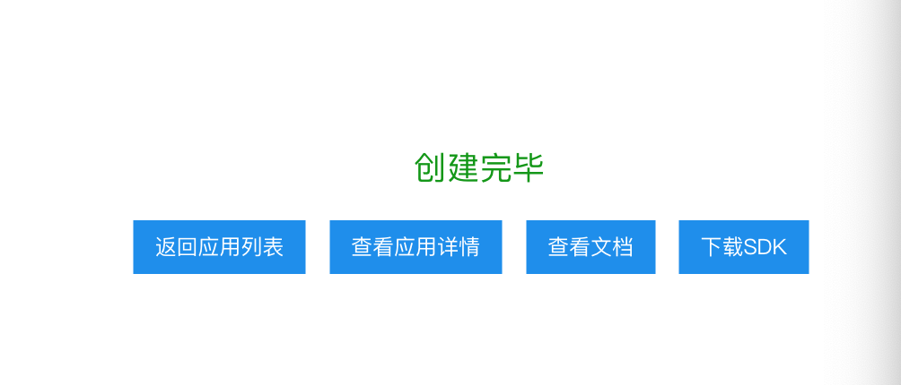

第二章:项目工具介绍
2 总体架构中的工具介绍¶
- 学习目标：
- 了解总体架构中使用了哪些工具。
- 掌握总体架构中各个工具的简介，作用，安装和基本使用方法。
总体架构中使用的工具：
-
Unit对话API使用
-
Flask web服务框架
- Redis数据库
- Gunicorn服务组件
- Supervisor服务监控器
- Neo4j图数据库
1 Unit对话API使用¶
学习目标：
- 了解Unit平台的相关知识。
- 掌握调用Unit API的实现过程。
1 Unit平台的相关知识¶
- Unit平台是百度大脑开放的智能对话定制与服务平台，也是当前最大的中文领域对话开放平台之一。 Unit对注册用户提供免费的对话接口服务，比如中文闲聊API, 百科问答API, 诗句生成API等，通过这些API我们可以感受一下智能对话的魅力，同时它也可以作为任务导向型对话系统无法匹配用户输入时的最终选择。

2 Unit闲聊API演示¶
用户输入 >>> "你好"
Unit回复 >>> "你好，想聊什么呢~"
用户输入 >>> "我想有一个女朋友!"
Unit回复 >>> "我也是想要一个女朋友~"
用户输入 >>> "晚吃啥呢想想"
Unit回复 >>> "想吃火锅"
3 调用Unit API的实现过程¶
-
第一步：注册登录百度账户，进入Unit控制台创建自己的机器人。
-
第二步：进行相关配置，获得请求API接口需要的API Key与Secret Key。
-
第三步：在服务器上编写API调用脚本并进行测试。
第一步：注册登录百度账户，进入Unit控制台创建自己的机器人，添加闲聊功能
- 创建机器人

- 添加闲聊功能
第二步：进行相关配置，获得请求API接口需要的API Key与Secret Key.
-
点击获取API Key进入百度云应用管理页面。
-
点击创建应用，进入应用信息表单填写页面。

-
填写完毕后，点击立即创建，成功后会提示创建完毕。

-
点击返回应用列表

- 可以看到创建的API Key和Secret Key, 至此创建流程结束。
第三步：在服务器上编写API调用脚本并进行测试
import json
import random
import requests
# client_id 为官网获取的AK， client_secret 为官网获取的SK
client_id = "74b8zns7KLC9T4Fv9UA0Fwra"
client_secret = "9kEGPhgTdlliXXEbZYkoDUbDjyBiBMIZ"
# service_id是机器人id
service_id = "S70282"
def unit_chat(chat_input, terminal_id="88888"):
"""
description:调用百度UNIT接口，回复聊天内容
Parameters
----------
chat_input : str
用户发送天内容
terminal_id : str
发起聊天用户ID，可任意定义
Return
----------
返回unit回复内容
"""
# 设置默认回复内容， 一旦接口出现异常，回复该内容
chat_reply = "不好意思，俺们正在学习中，随后回复你。"
# 根据 client_id 与 client_secret 获取access_token
url = "https://aip.baidubce.com/oauth/2.0/token?grant_type=client_credentials&client_id=%s&client_secret=%s" % (client_id, client_secret)
res = requests.get(url)
# print(res)
access_token = eval(res.text)["access_token"]
# print('access_token', access_token)
# 根据 access_token 获取聊天机器人接口数据
unit_chatbot_url = "https://aip.baidubce.com/rpc/2.0/unit/service/v3/chat?access_token=" + access_token
# 拼装聊天接口对应请求发送数据，主要是填充 query 值
post_data = {
"log_id": str(random.random()),
"request": {
"query": chat_input,
"terminal_id":terminal_id
},
"session_id": "",
"service_id": service_id,
"version": "3.0"
}
# 将封装好的数据作为请求内容，发送给Unit聊天机器人接口，并得到返回结果
res = requests.post(url=unit_chatbot_url, json=post_data)
# 获取聊天接口返回数据
unit_chat_obj = json.loads(res.content)
# 打印返回的结果
# print(unit_chat_obj)
# 判断聊天接口返回数据是否出错 error_code == 0 则表示请求正确
if unit_chat_obj["error_code"] != 0: return chat_reply
# 解析聊天接口返回数据，找到返回文本内容 result -> responses -> schema -> intent_confidence(>0) -> actions -> say
unit_chat_obj_result = unit_chat_obj["result"]
unit_chat_response_list = unit_chat_obj_result["responses"]
# 随机选取一个"意图置信度"[+responses[].schema.intent_confidence]不为0的作为回答
unit_chat_response_obj = random.choice(
[unit_chat_response for unit_chat_response in unit_chat_response_list if
unit_chat_response["schema"]["intents"][0]["intent_confidence"] > 0.0])
# 获取所有答复，并随机选择一个
unit_chat_response_action_list = unit_chat_response_obj["actions"]
unit_chat_response_action_obj = random.choice(unit_chat_response_action_list)
unit_chat_response_say = unit_chat_response_action_obj["say"]
return unit_chat_response_say
if __name__ == '__main__':
while True:
chat_input = input("请输入：")
if chat_input == 'Q' or chat_input == 'q' or chat_input == 'bye':
break
print(chat_input)
chat_reply = unit_chat(chat_input)
print("用户输入 >>>", chat_input)
print("Unit回复 >>>", chat_reply)
- 执行
python unit.py
- 输出效果
请输入：你好啊
你好啊
用户输入 >>> 你好啊
Unit回复 >>> 你也好啊~
请输入：今天天气棒棒哒
今天天气棒棒哒
用户输入 >>> 今天天气棒棒哒
Unit回复 >>> 必须的
请输入：晚饭吃点什么?
晚饭吃点什么?
用户输入 >>> 晚饭吃点什么?
Unit回复 >>> 晚饭没吃，减肥
请输入：
2 Flask web服务框架¶

- 简介：
- Flask框架是当下最受欢迎的python轻量级框架，也是pytorch官网指定的部署框架。 Flask的基本模式为在程序里将一个视图函数分配给一个URL，每当用户访问这个URL时，系统就会执行给该URL分配好的视图函数，获取函数的返回值，其工作过程见图。

-
作用：
- 在项目中，Flask框架是主逻辑服务和句子相关模型服务使用的服务框架。
-
安装：
# 使用pip安装Flask pip install flask -
基本使用方法：
# 导入Flask类
from flask import Flask
# 创建一个该类的实例app, 参数为__name__, 这个参数是必需的，
# 这样Flask才能知道在哪里可找到模板和静态文件等东西。
app = Flask(__name__)
# 使用route()装饰器来告诉Flask触发函数的URL
@app.route('/')
def hello_world():
"""请求指定的url后，执行的主要逻辑函数"""
# 在用户浏览器中显示信息：'Hello, World!'
return 'Hello, World!'
if __name__ == '__main__':
app.run(host="0.0.0.0", port=5000)
启动服务：
python flask_test.py
启动效果：
- 通过浏览器打开地址http://0.0.0.0:5000可看见打印了'Hello, World'.
3 Gunicorn服务组件¶

- 简介：
-
Gunicorn是一个被广泛使用的高性能的Python WSGI UNIX HTTP服务组件(WSGI: Web Server Gateway Interface)，移植自Ruby的独角兽（Unicorn ）项目，具有使用非常简单，轻量级的资源消耗，以及高性能等特点。
-
作用：
-
在项目中，Gunicorn和Flask框架一同使用，能够开启服务，处理请求，因其高性能的特点能够有效减少服务丢包率。
-
安装：
# 使用pip安装gunicorn
pip install gunicorn
- 基本使用方法：
# 使用其启动Flask服务：
gunicorn -w 1 -b 0.0.0.0:5000 flask_test:app
# -w 代表开启的进程数，我们只开启一个进程
# -b 服务的IP地址和端口
# flask_test:app 是指执行的主要对象位置，在flask_test.py中的app对象
# 如果使其在后台运行可使用：
# nohup gunicorn -w 1 -b 0.0.0.0:5000 flask_test:app 2>&1 &
4 Redis数据库¶
-
简介：
- Redis（全称：Remote Dictionary Server 远程字典服务）是一个开源的使用ANSI C语言编写、支持网络、可基于内存亦可持久化的日志型、Key-Value数据库，并提供多种语言的API.
- 作用：
- 在项目中，Redis用于会话管理数据库，保存用户聊天历史。
-
安装：
# 使用yum安装redis yum install epel-release yum install redis -y -
基本使用方法：
- Redis支持四种数据结构的存储：String(字符串), Hash(散列), List(列表), Set(集合), Sorted Set(有序集合).
- 在这里我们将着重介绍如何在python中使用Hash(散列)进行读写。
-
安装python中的redis驱动：
# 使用pip进行安装 pip install redis
- 启动redis服务：
# 启动redis-server, 这里使用了默认配置，端口是6379.
redis-server
- 在python中使用Hash(散列)进行读写：
# coding=utf-8
# redis配置
REDIS_CONFIG = {
"host": "0.0.0.0",
"port": 6379
}
# 导入redis驱动
import redis
# 创建一个redis连接池
pool = redis.ConnectionPool(**REDIS_CONFIG)
# 从连接池中初始化一个活跃的连接对象
r = redis.StrictRedis(connection_pool=pool)
# hset表示使用hash数据结构进行数据写入
# uid代表某个用户的唯一标识
uid = "8888"
# key是需要记录的数据描述
key = "该用户最后一次说的话：".encode('utf-8')
# value是需要记录的数据具体内容
value = "再见，董小姐".encode('utf-8')
r.hset(uid, key, value)
# hget表示使用hash数据结构进行数据读取
result = r.hget(uid, key)
print(result.decode('utf-8'))
- 输出效果：
再见，董小姐
5 Supervisor服务监控¶
-
简介：
- Supervisor是用Python开发的一个client/server服务，是Linux/Unix系统下的一个进程管理工具。它可以很方便的监听、启动、停止、重启一个或多个进程，并守护这些进程。
-
作用：
- 在项目中，Supervisor用于监控和守护主要逻辑服务和redis数据库服务。
-
安装：
# 使用yum安装supervisor yum install supervisor -y systemctl enable supervisord # 开机启动 systemctl start supervisord # 启动服务 -
基本使用方法：
# 编辑配置文件，指明监控和守护的进程开启命令，
# 请查看/etc/supervisord.conf文件
# 查看监控的进程状态：
supervisorctl status
# main_server RUNNING pid 31609, uptime 0:32:20
# redis RUNNING pid 31613, uptime 0:32:18
# 关闭supervisor
supervisorctl shutdown
- 还可以通过浏览器查看可视化监控页面：http://0.0.0.0:9001
6 Neo4j图数据库¶
- 因为在项目中，Neo4j图数据库作为核心的存储和查询数据库，因此会在第三章：Neo4j图数据库中对其进行详细的介绍。
7 小结¶
- 学习了总体架构中使用的工具：
-
Unit对话API使用
- 学习了Unit平台的相关知识，Unit平台是百度大脑开放的智能对话定制与服务平台，也是当前最大的中文领域对话开放平台之一。
- 学习了调用Unit API的实现过程：
- 第一步：注册登录百度账户，进入Unit控制台创建自己的机器人。
- 第二步：进行相关配置，获得请求API接口需要的API Key与Secret Key.
- 第三步：在服务器上编写API调用脚本并进行测试。
-
Flask web服务框架
- 作用：在项目中，Flask框架是主逻辑服务和句子相关模型服务使用的服务框架。
- Redis数据库
- 作用：在项目中，Redis用于会话管理数据库，保存用户聊天历史。
- Gunicorn服务组件
- 作用：在项目中，Gunicorn和Flask框架一同使用，能够开启服务，处理请求，因其高性能的特点能够有效减少服务丢包率。
- Supervisor服务监控器
- 作用：在项目中，Supervisor用于监控和守护主要逻辑服务和redis数据库服务。
- Neo4j图数据库